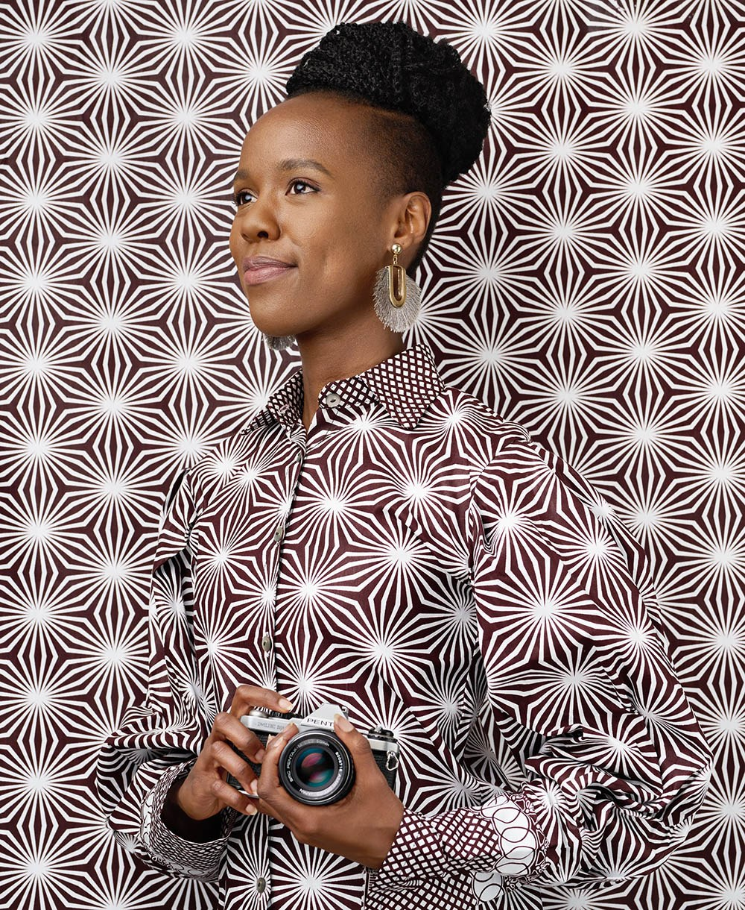
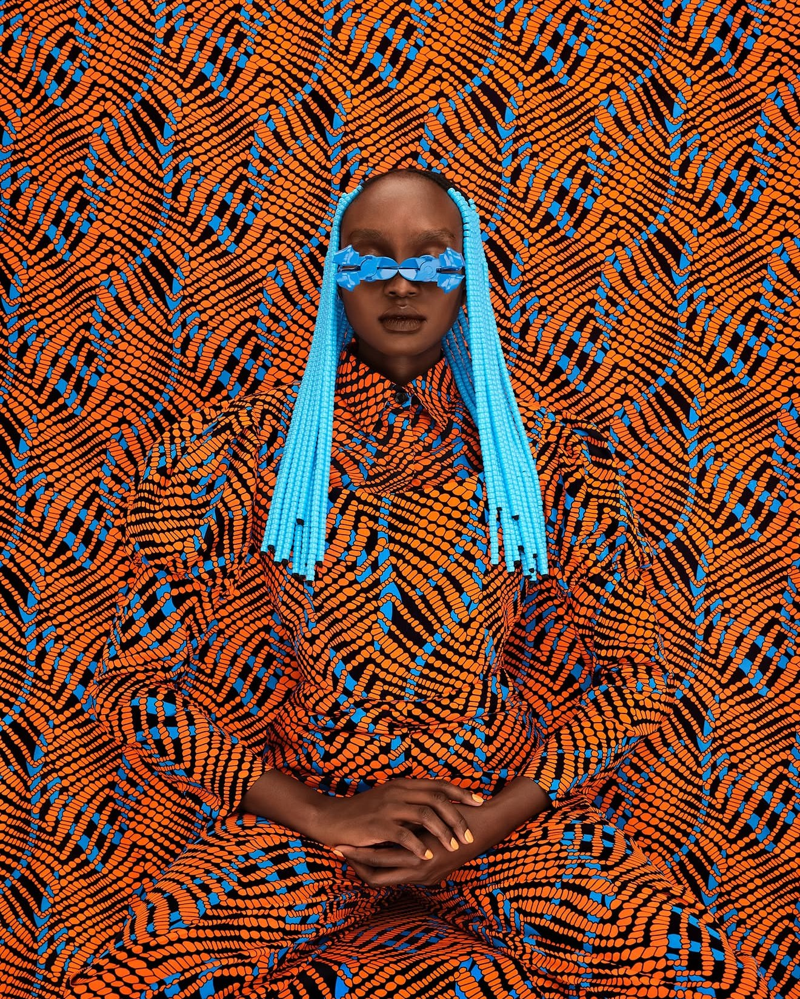
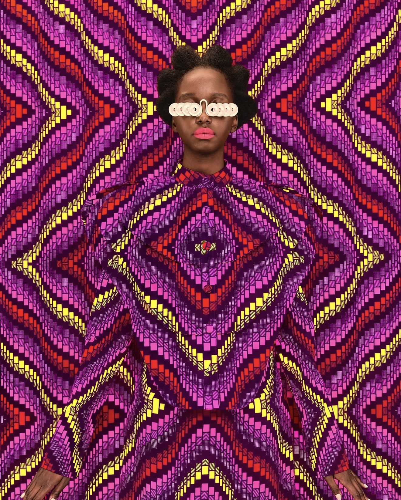
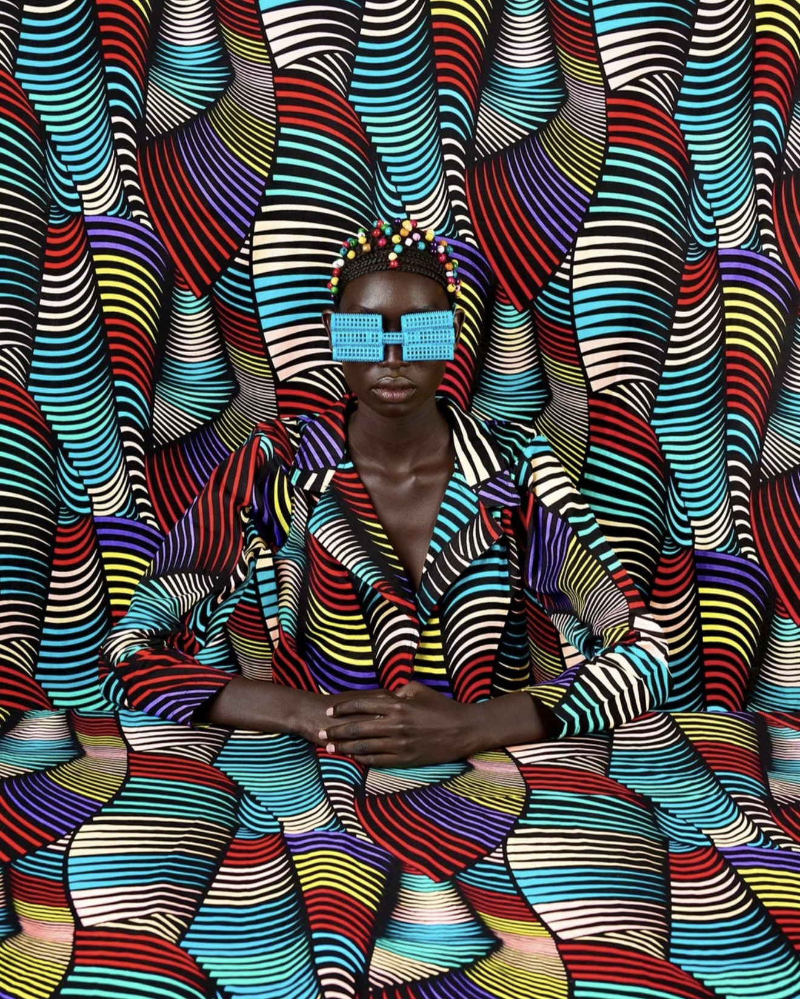
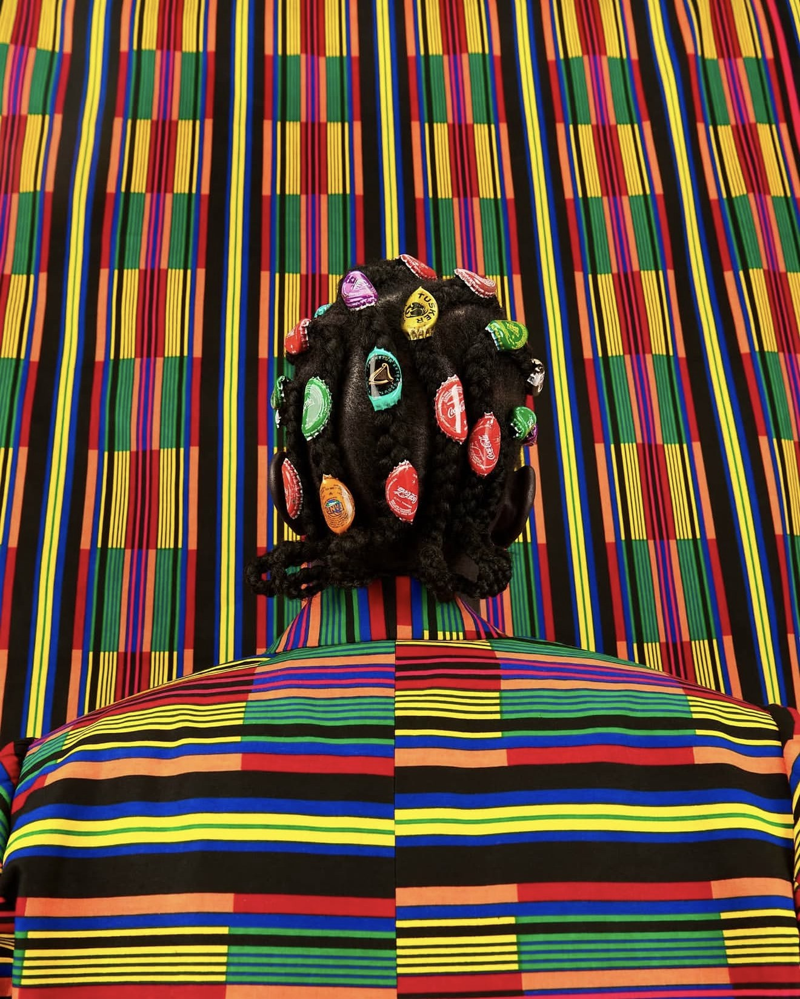
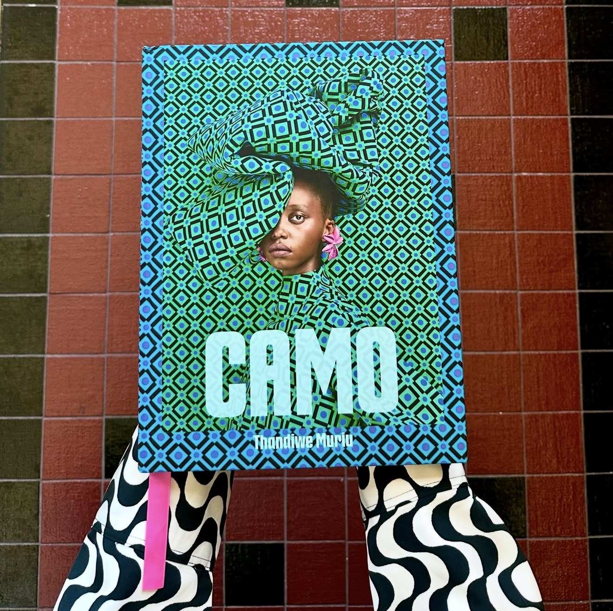
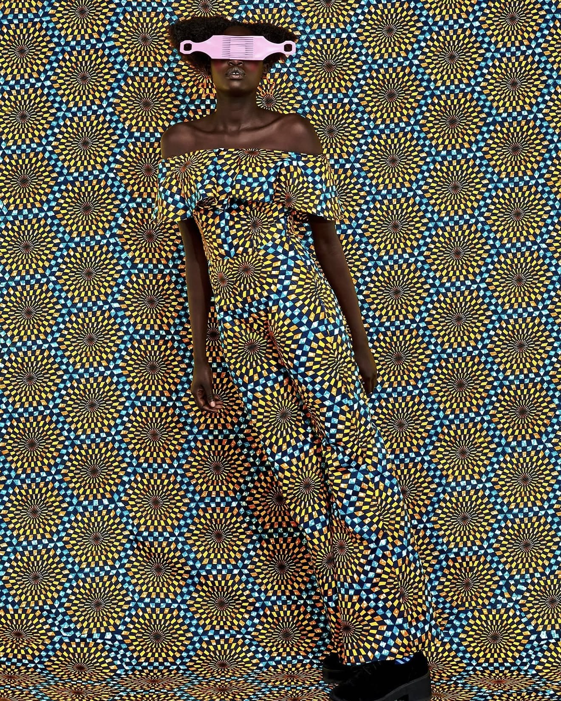
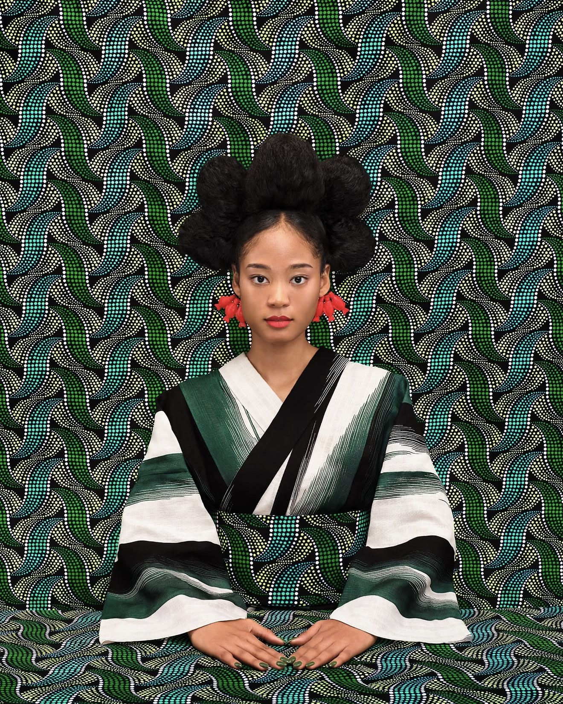
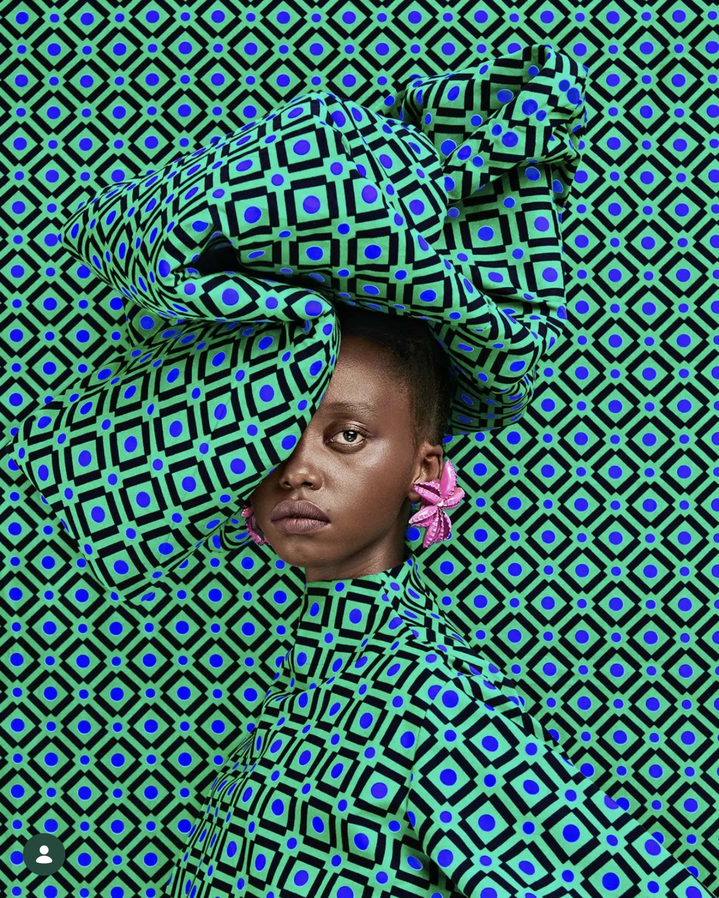

Thandiwe Muriu: the art of hiding in plain sight
The Nairobi photographer dresses women in the same fabric as the wall behind them, and somehow they're all you can see. How Camo took her from the city's fabric shops to Paris, Venice and Kyoto.

The startDad's camera, her rules
Thandiwe Muriu was born in Nairobi in 1990, and she still lives and works in the city. She found photography at 14, experimenting with her father's Nikon, and with no formal training she was working professionally by 17.
Before the art world knew her name, she built a career in commercial advertising photography. It was a Kenyan industry dominated by men, and working in it kept raising the same questions for her: what role women are expected to play, where tradition fits in, and how she saw herself.

The ideaHiding in plain sight
Those questions became Camo, short for camouflage, her first series. Her models wear outfits cut from the same bold fabric as the backdrop, so they seem to melt into the picture while still standing out from it.
The idea grew out of her own experience. She has described the series as a personal reflection on how she felt she could disappear into the background of her own culture.
With a little seed of imagination, you can grow a field of hope.
African proverb, from Camo

The processIt starts in the shops
Camo began as a way to celebrate African fabric, but she soon realised it had far more to say. Every image starts with the cloth: she spends hours in Nairobi's fabric shops, hunting for the loudest, boldest prints she can find.
Then comes the hair. Before each shoot she researches traditional hairstyles from across Africa and designs modern versions of them for her hairstylist, bringing old forms back in a new way.
Last come the accessories, built from everyday Kenyan objects: soda cans, tea strainers, bottle tops, combs and straws, reworked into jewellery and eyewear. It's a nod to how resourceful people are at home, where ordinary things are constantly given a second life.


The wordsOld wisdom, new frame
Every Camo image is paired with an African proverb, in English and Swahili, so the culture is heard as well as seen. In 2024 the series became her first book, Camo, published by Chronicle Books.

The riseFrom Nairobi to the world
In 2020 she won the People's Choice Award for Emerging Photographer of the Year at Photo London. She is represented by 193 Gallery, which has shown her work in Paris and Venice.
In 2024 her work was part of Passengers in Transit, an official collateral event of the 60th Venice Biennale, presented by the Centre for Contemporary Art, Lagos and hosted by 193 Gallery. She has also been a resident at the Rockefeller Foundation's Bellagio Center in Italy.

The new workNature as co-creator
For Clouds Bring Blessings, her third solo show at 193 Gallery in Paris, which opened in November 2025, she made her own fabric for the first time. Working with tie-dye, she let nature act as a co-creator in every piece.
This yearNairobi meets Kyoto
In April 2026, Longchamp presented Camo at Kyotographie, the Kyoto International Photography Festival in Japan. Alongside it she showed More Than Half, a new chapter of Camo made as the festival's African Artist in Residence, which weaves in traditional Japanese fabric.
The series is about belonging. In Japan, people with one Japanese parent and one parent of another origin are often called hāfu, meaning half, a word that suggests something incomplete. Her portraits argue the opposite: both origins make one whole person. More Than Half is showing at 193 Gallery Venice until 31 December 2026.

Paying it forwardMore than a picture
Back home, she runs workshops in Nairobi schools, sharing her story so young Kenyan women feel free to chase creative careers that are usually dominated by men.
So next time you walk past a fabric stall in town, look twice. It could be the start of a Thandiwe Muriu portrait.

Sources
- The Standard: How 'Camo' series made Kenyan photographer a global sensation (1 Jun 2026)
- Kenyans.co.ke: Self-taught Kenyan photographer using everyday items to create masterpieces
- Latitudes: Thandiwe Muriu (b. 1990, Nairobi)
- Longchamp: Through the Lens of Thandiwe Muriu
- Archer Magazine: Thandiwe Muriu's vibrant portraits bring Kenyan culture to the fore
- Creative Review: Photography Annual 2022, Thandiwe Muriu
- Glamour South Africa: Q&A with Kenyan photographer Thandiwe Muriu
- Colossal: Vibrant textiles and repurposed eyewear camouflage the subjects of Thandiwe Muriu's portraiture
- Africa Briefing: Thandiwe Muriu
- Institute Artist: CAMO
- Australian Centre for Photography: Q&A with Thandiwe Muriu
- Dornob: Thandiwe Muriu's Camo portraits bring Kenyan women to the fore
- Chronicle Books: Camo
- Aspire Design and Home: Breaking Patterns
- 193 Gallery: Thandiwe Muriu
- Artnet: Passengers in Transit at 193 Gallery, Venice
- Institute Artist: Clouds Bring Blessings at 193 Gallery
- Guardian TV: Thandiwe Muriu returns to Paris
- LUXUO: Longchamp and Thandiwe Muriu at Kyotographie 2026
- Tokyo Art Beat: Thandiwe Muriu, Ichinyo
- KYOTOGRAPHIE Delta: Ichinyo - More Than Half
- ArtRabbit: Thandiwe Muriu, More Than Half (193 Gallery Venice)